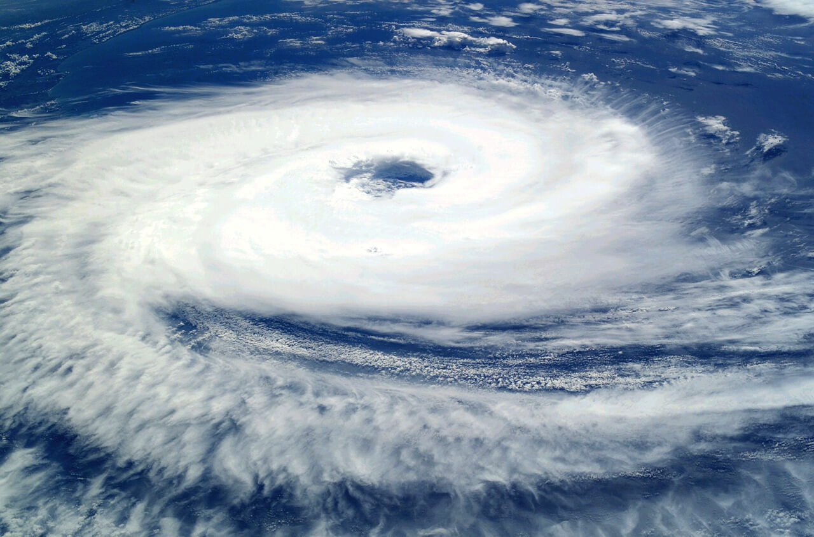

¿Qué son los Ciclones?
Un ciclón tropical es un sistema atmosférico cuyo viento circula en dirección ciclónica, esto es, en el sentido contrario a las manecillas del reloj en el hemisferio norte, y en el sentido de las manecillas del reloj en el hemisferio sur. Como su nombre lo indica, el ciclón tropical se origina en las regiones tropicales de nuestro planeta. Como la circulación ciclónica y bajas presiones atmosféricas relativas normalmente coexisten, es común usar los términos ciclón y baja de forma intercambiable.
En latitudes templadas los ciclones son referidos como depresiones o ciclones extratropicales, y el término ciclón se usa sólo para referirse a los ciclones tropicales.

Los ciclones tropicales están entre los sistemas meteorológicos más peligrosos y destructivos de la tierra. Mientras la estructura y funcionamiento de una tormenta tropical madura son conocidos, su origen aún no es bien entendido. La etapa antecedente de un ciclón tropical es conocida en América como perturbación tropical; los ciclones tropicales se caracterizan por una circulación cerrada de sus vientos y se dividen en fases de acuerdo con la velocidad de su Viento Máximo Sostenido en superficie (VMS):
Depresión tropical: VMS menor a 63 km/h
Tormenta tropical: VMS entre 63 y 118 km/h
Huracán: VMS mayor a 118 km/h
Estos últimos, en su etapa más intensa son conocido por varios nombres, según las regiones en donde ocurren:
1- En el Océano Atlántico, Golfo de Mérico y Mar Caribe, son conocidos como huracanes.
2- En el mar de Arabia y la Bahía de Bengala como ciclones.
3- En el mar de China y la costa de Japón como tifones.
4- En el Océano Índico, al este de Mauricio y Madagascar, como ciclones.
5- En el Océano Pacífico del noreste como huracanes.
6- En el Pacífico Sur, al este de Australia y Samoa como huracanes y Willy Willy.
7- En las Filipinas son conocidos como Baguíos.
8- Estos sistemas de tormenta exigen, al menos, dos requisitos básicos: calor y humedad; como consecuencia, sólo se desarrollan en los trópicos, entre las latitudes 5° y 30° norte y sur, en las regiones y temporadas en que la temperatura del mar es superior a los 26° C.
Cuando un ciclón tropical alcanza el grado de tormenta tropical, es nombrado para facilitar la comunicación entre meteorólogos y el público en general con respecto a pronósticos, avisos y alertas. Los nombres pueden reducir la confusión acerca de la tormenta que se está describiendo, ya que los ciclones pueden durar una semana o más, y más de uno puede estar presente en el mismo océano al mismo tiempo.
Los ciclones intensos están entre los más destructivos de los desastres naturales, capaces de causar graves daños a poblaciones costeras y ocasionar pérdidas humanas. Sin embargo, proporcionan precipitaciones esenciales para gran parte de las tierras que cruzan.
La energía de los ciclones tropicales proviene esencialmente del calor y la humedad que transfiere el océano al aire en los niveles bajos de la atmósfera. Mientras el centro del ciclón permanece sobre agua cálidas, el suministro de energía es enorme. Mientras más y más aire húmedo se dirige hacia el centro de la tormenta para reemplazar al aire caliente que asciende rápidamente en forma de nubes, mayor calor es liberado a la atmósfera por condensación del vapor de agua y la circulación del viento continúa incrementándose.
Clasificación de los ciclones tropicales
Nombrados de menor a mayor intensidad, los ciclones tropicales se clasifican en tres categorías: depresión tropical, tormenta tropical y huracán, de los cuales éstos últimos son los más conocidos por tratarse de ciclones muy intensos.
1- Depresión tropical
2- Tormenta tropical
3- Huracán
La clasificación de los ciclones tropicales de acuerdo a la intensidad de sus vientos y marea se da con base a la Escala de Beaufort y, específicamente los huracanes se clasifican del 1 al 5 en la escala Saffir/Simpson.